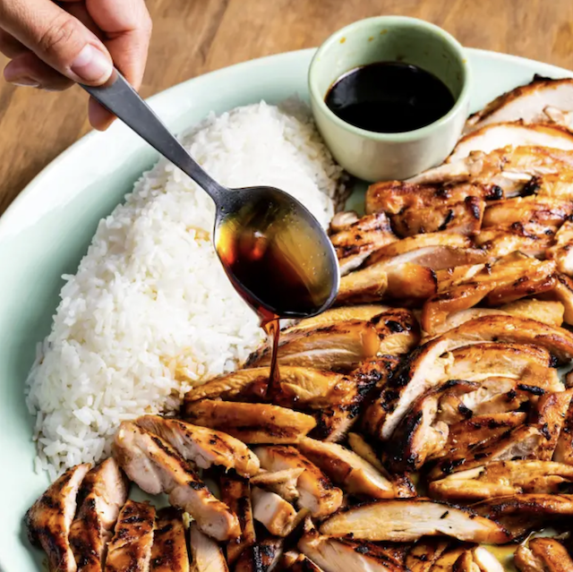

View Recipe
Chicken Teriyaki
Teriyaki (translating roughly as “shiny grilled” in Japanese) describes both the sauce and the cooking style in which it's used: Meat is marinated in a thin but potent mixture of soy sauce, sugar, and a sweet Japanese wine called mirin and then quickly grilled or broiled.
-
Preparation Time
30 min
-
Total Time
2 hours
-
Serves
6 to 8

Shakshuka
Though it is North African in origin, today shakshuka is popular throughout the Middle East (particularly in Israel, where it may as well be one of the national dishes) and in hip neighborhood diners all over the coastal U.S.
-
Preparation Time
10 min
-
Total Time
35
-
Serves
4 to 6

Ultimate BLT Sandwich
Do you really need a recipe for this simple classic? If you want the ultimate version, indeed you do.
-
Preparation Time
10 min
-
Total Time
15 min
-
Serves
4